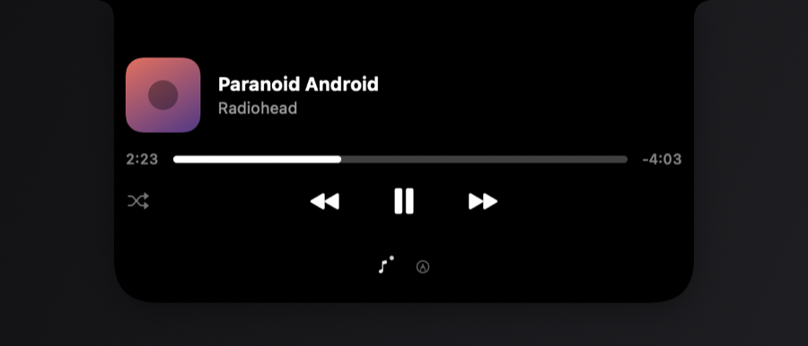
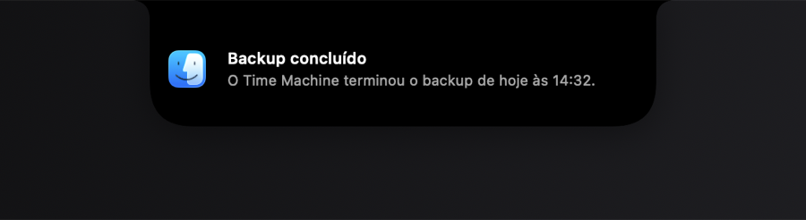
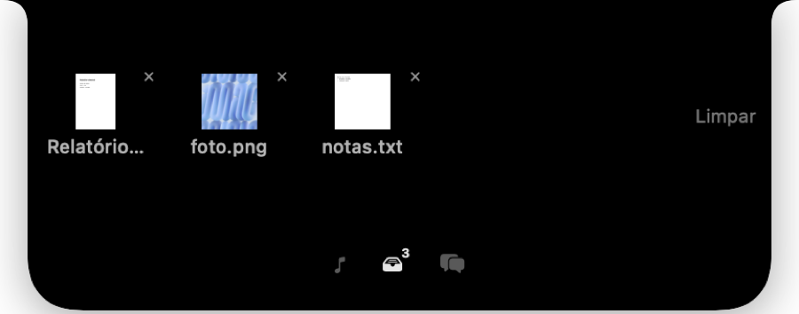

O notch do seu Mac,
finalmente útil.
Música, volume, notificações, ditado e foco aparecem onde a câmera já estava.
O que já acontece no Mac, num lugar só.
A música, o volume e as notificações do sistema passam a sair do notch, sem os balões espalhados pela tela.

Foco sem abrir outro app.
Pomodoro, pausas programadas e lembretes ficam no notch, visíveis sem roubar a tela.
Fale, guarde, anote.
Dite em qualquer campo, arraste arquivos pro notch e desenhe por cima da tela numa apresentação.

Para quem automatiza.
Qualquer script manda um card pro notch com uma linha. Serviços externos também, por webhook.
curl -X POST 127.0.0.1:4477/notify \
-d '{"title":"Build pronto","body":"main passou"}'
Instalar leva um minuto.
- 1
Baixe
Abra o arquivo baixado e arraste o Knobler para Aplicativos.
- 2
Libere a abertura
O macOS pede uma confirmação em Privacidade e Segurança na primeira vez.
- 3
Dê as permissões
O próprio app te guia pelo que cada recurso precisa.